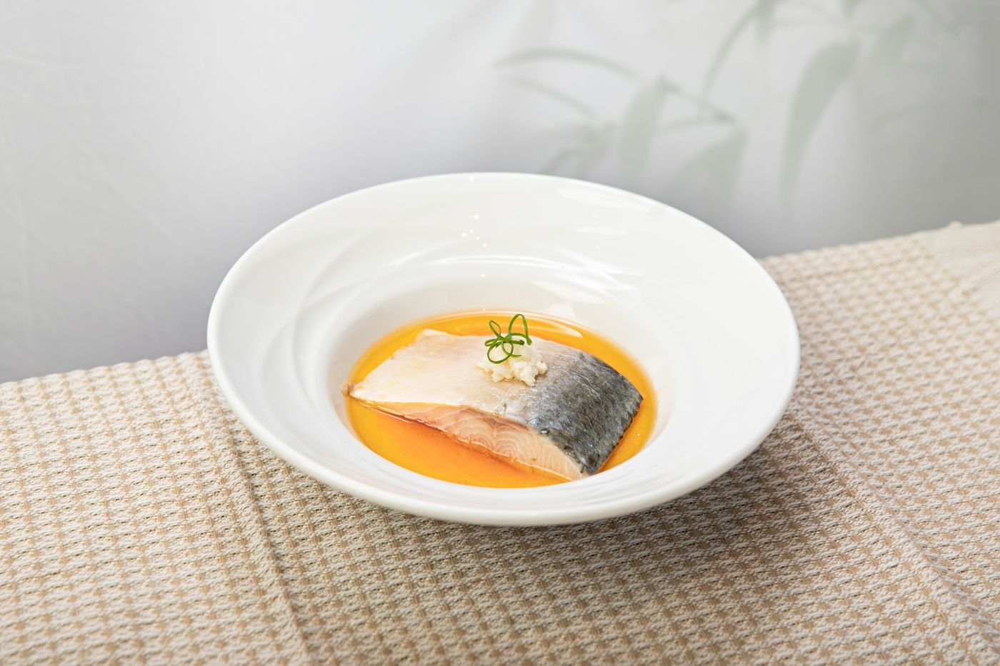

Garden Harvest Bowl
$24Roasted vegetables, quinoa, leafy greens, and lemon-tahini dressing.
Plant-basedSEASONALLY INSPIRED · TORONTO, CANADA
A fresh take on gathering around the table. Discover vibrant plates, comforting flavours, and a slower kind of evening.
Explore the menuA fictional restaurant concept, made for learning.

OUR STORY
Toronto Garden Restaurant is an imagined neighbourhood gathering place, inspired by the city's diverse food culture and the simple pleasure of a meal shared.
Our sample menu brings garden vegetables, warm grains, and carefully prepared classics together. Familiar enough to feel at home. Fresh enough to discover something new.
Get to know the spaceTHE HOUSE FAVOURITES
Three plates to start the conversation.
All prices shown in CAD.
Roasted vegetables, quinoa, leafy greens, and lemon-tahini dressing.
Plant-basedRoasted salmon, creamy potatoes, seasonal greens, and lemon-herb sauce.
From the sample dinner menuArborio rice, sautéed mushrooms, Parmesan, and a touch of thyme.
VegetarianMAKE YOURSELF AT HOME
A little inspiration for your next gathering,
right here in Toronto, Canada.
Illustrative hours · Toronto local time
Toronto, Canada
No physical address or telephone number: this restaurant is fictional.
hello@torontogarden.example
Example email only. Not monitored. Reservations and orders are unavailable.